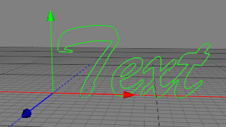

|
Text ObjectThe text object is a parametric spline object. With help of the text object you can create a text spline out of any in Mac OS X installed True Type font. This text spline can than be used with help of the extrude or the sweep object to create a 3D Font.  Properties
|